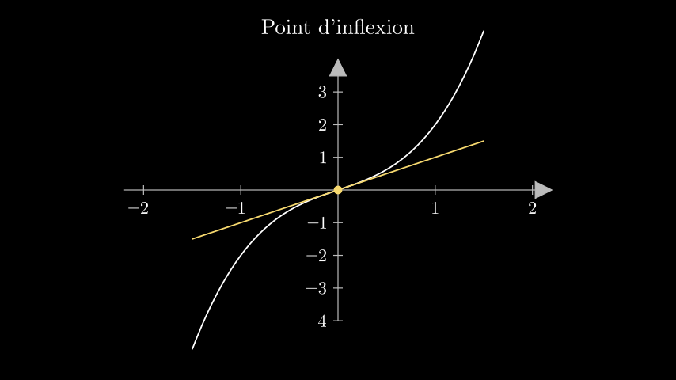
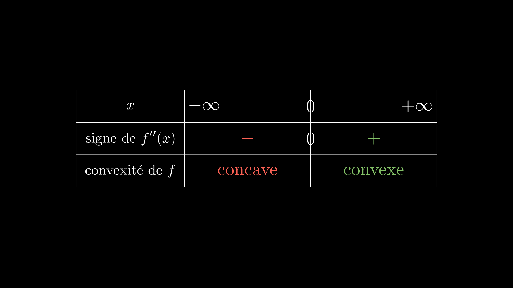

Motivations. Avec la convexité, nous allons pouvoir
établir des inégalités,
déterminer à partir de quel moment un phénomène passe d'unne accélération à un ralentissement (et vice versa).
Avant de donner la définition d'une fonction convexe, on va s'intéresser au lien entre la courbe d'une fonction $f$ et la courbe de la fonction $-f$.
Les courbes représentatives des fonctions $f$ et $-f$ sont symétriques par rapport à l'axe des abscisses.
Par symétrie par rapport à l'axe des abscisses, on en déduit la propriété siuivantes.
Soit $f$ une fonction.
Les fonctions $f$ et $-f$ ont des sens de variations opposés.
Les fonctions $f$ et $-f$ ont des signes opposés.
1. Courbe d'une fonction convexe
Soit $f$ une fonction définie sur un intervalle $I$. On note $C_f$ la courbe représentative de $f$ dans un repère du plan. On dit que la fonction $f$ est convexe si la courbe $C_f$ se situe en dessous de chacune de ses sécantes entre le deux points d'intersection.
Si la courbe $C_f$ se situe au dessus de chacune de ses sécantes entre le deux points d'intersection, on dit que la fonction $f$ est concave. Autrement dit, la fonction $f$ est concave si la fonction $-f$ est convexe.
Il existe des fonctions ni convexes, ni concaves.
Exercice 1 de la fiche.
2. Convexité et dérivabilité
Soit $f$ une fonction définie et dérivable sur un intervalle $I$. Les assertions sont équivalentes.
La fonction $f$ est convexe sur $I$.
La courbe $C_f$ est au-dessus de chacune de ses tangentes.
La fonction dérivée $f'$ est croissante sur $I$.
Par symétrie par rapport à l'axe des abscisses, on a la propriété suivante.
Soit $f$ une fonction définie et dérivable sur un intervalle $I$. Les assertions sont équivalentes.
La fonction $f$ est concave sur $I$.
La courbe $C_f$ est en dessous de chacune de ses tangentes.
La fonction dérivée $f'$ est décroissante sur $I$.
Exercices 2 à 4 de la fiche.
Soit $f$ une fonction définie et dérivable sur un intervalle $I$. On suppose que la fonction dérivée $f'$ est aussi dérivable. La dérivée seconde de $f$ est la fonction, notée $f''$ définie par
$$f''=(f')'.$$
Pour tout $x\in\mathbb{R}$, on pose $f(x)=x^3-5x^2+3x+5$. La fonction $f$ est deux fois dérivable sur $\mathbb{R}$ et pour tout $x\in\mathbb{R}$, on a $f'(x)=3x^2-10x+3$ et $f''(x)=6x-10$.
Soit $f$ une fonction définie et deux fois dérivable sur un intervalle $I$.
La fonction $f$ est convexe si, et seulement si, pour tout $x\in I,f''(x)\geqslant 0$.
La fonction $f$ est concave si, et seulement si, pour tout $x\in I,f''(x)\leqslant 0$.
Les fonctions $x\mapsto x^2,x\mapsto\mathrm{e}^x$ sont des fonctions convexes.
Les fonctions $x\mapsto \sqrt{x},x\mapsto\ln(x)$ sont des fonctions concaves.
Exercices 5 à 8 de la fiche.
3. Point d'inflexion
Soient $f$ une fonction définie sur un intervalle $I$ et $a\in I$. On dit que la courbe représentative de $f$ admet un point d'inflexion en $a$ si $f$ change de concavité en $a$. Ce point d'inflexion a pour coordonnées $(a;f(a))$.

On considère la fonction cube $x\mapsto x^3$. Pour tout $x\in\mathbb{R}$, on a $f(x)=3x^2$ et $f''(x)=6x$. On remarque que $f''(x)>0\iff 6x>0$. On a le tableau ci-dessous.

On en déduit que la courbe représentative de la fonction cube admet un point d'inflexion d'abscisse $x=0$. Comme $f(0)=0^3$, ce point d'inflexion a pour coordonnées $(0;0)$.